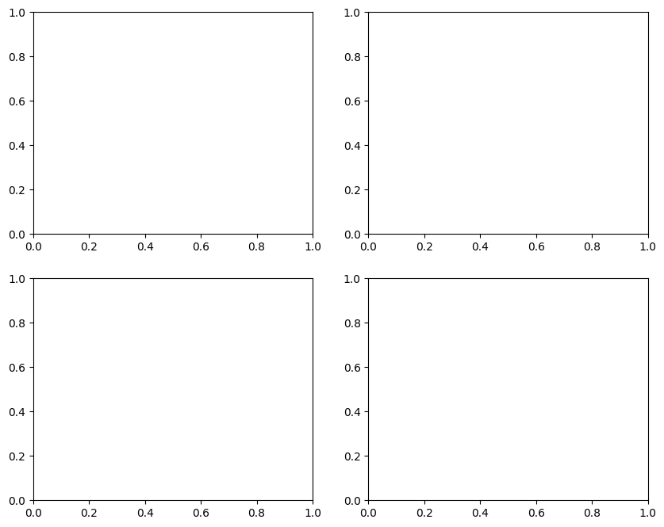
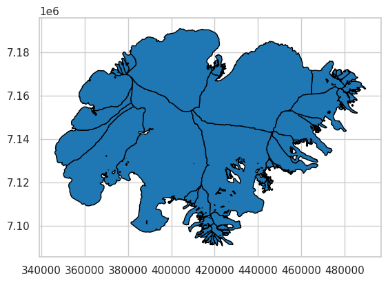
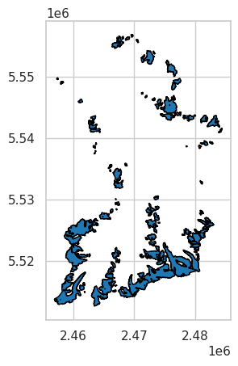

Creating DTC Glaciers EO-Native Data Cubes (L1)#
In this notebook, we focus on the creation of EO-native data cubes, referred to in the DTC Glaciers project as Level 1 (L1) data cubes.
L1 data cubes form the observational foundation of the DTC Glaciers workflow.
They consist exclusively of Earth Observation (EO) data and in-situ measurements, without the inclusion of model-derived or assimilated quantities. In line with the project design outlined in the proposal, L1 data cubes are generated for individual glaciers, providing a harmonised, analysis-ready representation of the available observations.
All variables within an L1 data cube are projected onto a common spatial grid, temporally aligned where applicable, and pre-processed to enable consistent use in subsequent stages of the DTC, including data assimilation, modelling, and validation workflows (L2 and beyond).
To illustrate the construction and content of L1 data cubes using different EO data sources, this notebook focuses on two contrasting case studies: the Brúarjökull outlet glacier of the Vatnajökull ice cap in Iceland, and Vernagtferner in the Ötztal Alps, Austria.
If required, install the DTCG API using the following command:
!pip install 'dtcg[jupyter] @ git+https://github.com/DTC-Glaciers/dtcg'
Run this command in a notebook cell.
# Imports
import dtcg.integration.oggm_bindings as oggm_bindings
import matplotlib.pyplot as plt
Downloading salem-sample-data...
rgi_id_ice = "RGI60-06.00377" # Brúarjökull
rgi_id_aut = "RGI60-11.00719" # Vernagtferner
Extract L1 data cubes from OGGM#
DTC Glaciers starts from glacier-domain datasets provided through the OGGM Shop, which aggregates products from multiple data providers and packages them into a data cube.
This step downloads the required pre-processed L1 data cubes from OGGM in the background and prepares the inputs needed to run the glacier model. This operation can take some time as it involves transferring data from the OGGM servers.
This download step is not required for end users: L1 and L2 data cubes are intended to be accessed directly as ready-to-use products (via GeoZarr). The workflow shown here illustrates the internal processes performed by the DTC Glaciers system to create and manage these data cubes.
dtcg_oggm_ice = oggm_bindings.BindingsOggmModel(rgi_id=rgi_id_ice)
dtcg_oggm_aut = oggm_bindings.BindingsOggmModel(rgi_id=rgi_id_aut)
Let’s have a look what OGGM supports out of the box:
dtcg_oggm_aut.datacube_l1
---------------------------------------------------------------------------
AttributeError Traceback (most recent call last)
Cell In[4], line 1
----> 1 dtcg_oggm_aut.datacube_l1
AttributeError: 'BindingsOggmModel' object has no attribute 'datacube_l1'
A central element of each data cube is the glacier outline which defines the spatial domain of the glacier.
The data cube domain is constructed by adding a buffer around this outline to ensure full coverage of the glacier and its immediate surroundings.
In the current implementation, we rely on Randolph Glacier Inventory (RGI) version 6 outlines.
This choice is driven by data availability and consistency, as most global glacier datasets currently in use have been processed based on RGI v6 outlines.
In future developments, the DTC Glaciers workflow is expected to transition to RGI version 7 as data products and community standards evolve.
Let’s have a look at the glacier outline used in this example:
glacier_mask_aut = dtcg_oggm_aut.datacube_l1.glacier_mask
glacier_mask_aut.plot();
---------------------------------------------------------------------------
AttributeError Traceback (most recent call last)
Cell In[5], line 1
----> 1 glacier_mask_aut = dtcg_oggm_aut.datacube_l1.glacier_mask
2 glacier_mask_aut.plot();
AttributeError: 'BindingsOggmModel' object has no attribute 'datacube_l1'
The data cubes already contain topographic information from the Copernicus DEM – Global and European Digital Elevation Model:
dtcg_oggm_aut.datacube_l1.topo.plot();
---------------------------------------------------------------------------
AttributeError Traceback (most recent call last)
Cell In[6], line 1
----> 1 dtcg_oggm_aut.datacube_l1.topo.plot();
AttributeError: 'BindingsOggmModel' object has no attribute 'datacube_l1'
As well as:
Ice thickness data from Farinotti et al. (2019) (consensus estimate)
Elevation change data from Hugonnet et al. (2021)
Ice velocity data from ITS_LIVE
Ice velocity and ice thickness data from Millan et al. (2022)
---------------------------------------------------------------------------
AttributeError Traceback (most recent call last)
Cell In[7], line 17
14 fig, axs = plt.subplots(2, 2, figsize=(10, 8))
16 # Farinotti et al. (2019) ice thickness (consenus estimate)
---> 17 dtcg_oggm_aut.datacube_l1.consensus_ice_thickness.plot(ax=axs[0, 0])
19 # Hugonnet et al. (2021) height change
20 dtcg_oggm_aut.datacube_l1.hugonnet_dhdt.where(glacier_mask_aut).plot(ax=axs[0, 1])
AttributeError: 'BindingsOggmModel' object has no attribute 'datacube_l1'

Enhancing OGGM data cubes with new observations#
CryoTEMPO-EOLIS derived from CryoSat-2#
We developed a method to add four CryoTEMPO-EOLIS variables derived from CryoSat-2 observations to the L1 data cubes.
Variable |
Dims |
Description |
|---|---|---|
|
|
Time series of spatial maps of elevation change since January 2011. |
|
|
Uncertainty (σ) for the gridded elevation-change maps. |
|
|
Spatially aggregated 1D elevation-change series since January 2011. |
|
|
Uncertainty (σ) for the aggregated series. |
To use this on your own laptop, you need to register on the CryoTEMPO-EOLIS website and obtain an API key. You then need to provide this key to DTC Glaciers in the following way:
# import os
# os.environ["SPECKLIA_API_KEY"] = ENTER YOUR SPECKLIA API KEY HERE
You can add the data using add_data together with DatacubeCryotempoEolis. This step can take some time, as up-to-date data are downloaded from the CryoTEMPO-EOLIS server and reprojected to the L1 data cubes.
from dtcg.datacube.cryotempo_eolis import DatacubeCryotempoEolis
dtcg_oggm_ice.add_data(DatacubeCryotempoEolis)
dtcg_oggm_ice.datacube_l1
---------------------------------------------------------------------------
AttributeError Traceback (most recent call last)
Cell In[9], line 3
1 from dtcg.datacube.cryotempo_eolis import DatacubeCryotempoEolis
----> 3 dtcg_oggm_ice.add_data(DatacubeCryotempoEolis)
5 dtcg_oggm_ice.datacube_l1
AttributeError: 'BindingsOggmModel' object has no attribute 'add_data'
Let’s visualise these new data:
---------------------------------------------------------------------------
AttributeError Traceback (most recent call last)
Cell In[10], line 4
1 import xarray as xr
3 # decode for nice plotting (we dont do this during processing as it alters the metadata)
----> 4 datacube_decoded = xr.decode_cf(dtcg_oggm_ice.datacube_l1)
6 fig, axes = plt.subplots(ncols=2, nrows=1, figsize=(15, 5))
7 datacube_decoded.eolis_gridded_elevation_change.isel(t=-1).plot(ax=axes[0], cmap="RdBu")
AttributeError: 'BindingsOggmModel' object has no attribute 'datacube_l1'
Glacier surface classification from Sentinel-2#
For DTC Glaciers, ENVEO provides a 10 m gridded glacier surface classification product derived from Sentinel-2 data. This dataset can be added to the L1 data cubes in the same way as shown above.
Variable |
Dims |
Description |
|---|---|---|
|
|
Glacier surface classification. |
|
|
Glacier surface classification uncertainty. |
|
|
Snowline altitude derived from glacier surface classification for three different snow cover area fractions (25%, 50% and 75%) per 30m elevation band. |
from dtcg.datacube.surface_type import DatacubeSurfaceType
dtcg_oggm_aut.add_data(DatacubeSurfaceType)
dtcg_oggm_aut.datacube_l1
---------------------------------------------------------------------------
AttributeError Traceback (most recent call last)
Cell In[11], line 3
1 from dtcg.datacube.surface_type import DatacubeSurfaceType
----> 3 dtcg_oggm_aut.add_data(DatacubeSurfaceType)
5 dtcg_oggm_aut.datacube_l1
AttributeError: 'BindingsOggmModel' object has no attribute 'add_data'
The snowline was derived within DTC Glaciers for model validation and could also be assimilated in the future. To derive it, we aggregated the gridded glacier surface classification into 30 m elevation bands and calculated the snow cover area fraction for each band, excluding cloud-covered pixels.
We then identified the lowest elevation band where one of the three thresholds - 25%, 50%, or 75% - was exceeded for the first time.
Let’s look at one example:
---------------------------------------------------------------------------
ImportError Traceback (most recent call last)
Cell In[12], line 3
1 import numpy as np
2 import xarray as xr
----> 3 from dtcg.datacube.surface_type import (
4 get_categories_per_elevation_band,
5 exclude_empty_elevation_bins,
6 exclude_dates_with_too_much_cloud_cover,
7 get_snowline,
8 )
11 def plot_surface_classification_per_elev_band(datacube_l1, date):
12 ds_obs = get_categories_per_elevation_band(datacube_l1)
ImportError: cannot import name 'exclude_dates_with_too_much_cloud_cover' from 'dtcg.datacube.surface_type' (/opt/hostedtoolcache/Python/3.11.14/x64/lib/python3.11/site-packages/dtcg/datacube/surface_type.py)
plot_surface_classification_per_elev_band(
datacube_l1=dtcg_oggm_aut.datacube_l1, date=dtcg_oggm_aut.datacube_l1.t_sfc_type[1]
)
---------------------------------------------------------------------------
NameError Traceback (most recent call last)
Cell In[13], line 1
----> 1 plot_surface_classification_per_elev_band(
2 datacube_l1=dtcg_oggm_aut.datacube_l1, date=dtcg_oggm_aut.datacube_l1.t_sfc_type[1]
3 )
NameError: name 'plot_surface_classification_per_elev_band' is not defined
Let’s visualize the derived snowline on top of the original gridded data:
plot_gridded_surface_classification(
datacube_l1=dtcg_oggm_aut.datacube_l1,
date=dtcg_oggm_aut.datacube_l1.t_sfc_type[1],
snowline=3120,
)
---------------------------------------------------------------------------
AttributeError Traceback (most recent call last)
Cell In[15], line 2
1 plot_gridded_surface_classification(
----> 2 datacube_l1=dtcg_oggm_aut.datacube_l1,
3 date=dtcg_oggm_aut.datacube_l1.t_sfc_type[1],
4 snowline=3120,
5 )
AttributeError: 'BindingsOggmModel' object has no attribute 'datacube_l1'
In-situ mass balance observations from WGMS#
For validation, the DTCG API can add in-situ mass balance observations from WGMS to the L1 data cubes for glaciers where such observations are available, using the same approach as shown above.
Variable |
Dims |
Description |
|---|---|---|
|
|
Specific mass balance observation as reported tothe World Glacier Monitoring Service. |
|
|
Specific mass balance observation uncertainty as reported to the World Glacier Monitoring Service. If no value was reported it is set to 200 mm w.e.. |
from dtcg.datacube.wgms import DatacubeWGMS
dtcg_oggm_ice.add_data(DatacubeWGMS)
dtcg_oggm_ice.datacube_l1
---------------------------------------------------------------------------
AttributeError Traceback (most recent call last)
Cell In[16], line 3
1 from dtcg.datacube.wgms import DatacubeWGMS
----> 3 dtcg_oggm_ice.add_data(DatacubeWGMS)
5 dtcg_oggm_ice.datacube_l1
AttributeError: 'BindingsOggmModel' object has no attribute 'add_data'
plt.errorbar(
x=dtcg_oggm_ice.datacube_l1.t_wgms,
y=dtcg_oggm_ice.datacube_l1.wgms_mb,
yerr=dtcg_oggm_ice.datacube_l1.wgms_mb_unc,
fmt=".--",
capsize=2,
)
plt.grid("on")
plt.ylabel("Specific MB (mm w.e. yr-1)")
plt.xlabel("Year")
plt.title(dtcg_oggm_ice.datacube_l1.attrs["RGI-ID"])
plt.show()
---------------------------------------------------------------------------
AttributeError Traceback (most recent call last)
Cell In[17], line 2
1 plt.errorbar(
----> 2 x=dtcg_oggm_ice.datacube_l1.t_wgms,
3 y=dtcg_oggm_ice.datacube_l1.wgms_mb,
4 yerr=dtcg_oggm_ice.datacube_l1.wgms_mb_unc,
5 fmt=".--",
6 capsize=2,
7 )
8 plt.grid("on")
9 plt.ylabel("Specific MB (mm w.e. yr-1)")
AttributeError: 'BindingsOggmModel' object has no attribute 'datacube_l1'
Apply CF Convention and Export as GeoZarr#
After creating the enhanced L1 data cube, we can update the metadata for all variables to follow the CF Convention using the DTCG API’s GeoZarrHandler.
from dtcg.datacube.geozarr import GeoZarrHandler
datacube_handler_aut = GeoZarrHandler(dtcg_oggm_aut.datacube_l1)
datacube_handler_aut.data_tree
---------------------------------------------------------------------------
AttributeError Traceback (most recent call last)
Cell In[18], line 3
1 from dtcg.datacube.geozarr import GeoZarrHandler
----> 3 datacube_handler_aut = GeoZarrHandler(dtcg_oggm_aut.datacube_l1)
5 datacube_handler_aut.data_tree
AttributeError: 'BindingsOggmModel' object has no attribute 'datacube_l1'

from pathlib import Path
import tempfile
with tempfile.TemporaryDirectory(suffix=".zarr") as tmpdir:
output_path = Path(tmpdir)
datacube_handler_aut.export(output_path)
print(f"✅ GeoZarr exported to: {output_path}")
items = sorted(p.name for p in output_path.iterdir())
print("📂 Top-level contents:", ", ".join(items) or "(empty)")
---------------------------------------------------------------------------
NameError Traceback (most recent call last)
Cell In[19], line 6
4 with tempfile.TemporaryDirectory(suffix=".zarr") as tmpdir:
5 output_path = Path(tmpdir)
----> 6 datacube_handler_aut.export(output_path)
7 print(f"✅ GeoZarr exported to: {output_path}")
8 items = sorted(p.name for p in output_path.iterdir())
NameError: name 'datacube_handler_aut' is not defined
Preprocessed data cubes for case study regions#
Preprocessed L1 data cubes, including all currently supported observations, are available for the case study regions in Iceland and Austria. You can obtain the URL of the latest version via DEFAULT_L1_DATACUBE_URL and use the DTCG API’s dedicated data cube streaming functionality as shown below:
from dtcg import DEFAULT_L1_DATACUBE_URL
from dtcg.api.external.call import StreamDatacube
streamer = StreamDatacube(server=DEFAULT_L1_DATACUBE_URL)
datacube = streamer.stream_datacube(glacier=rgi_id_ice)
datacube
---------------------------------------------------------------------------
TypeError Traceback (most recent call last)
Cell In[20], line 4
1 from dtcg import DEFAULT_L1_DATACUBE_URL
2 from dtcg.api.external.call import StreamDatacube
----> 4 streamer = StreamDatacube(server=DEFAULT_L1_DATACUBE_URL)
5 datacube = streamer.stream_datacube(glacier=rgi_id_ice)
6 datacube
File /opt/hostedtoolcache/Python/3.11.14/x64/lib/python3.11/site-packages/dtcg/api/external/call.py:34, in StreamDatacube.__init__(self, server)
32 def __init__(self, server="https://cluster.klima.uni-bremen.de/~dtcg/test_zarr/"):
33 self.binder = oggm_bindings.BindingsCryotempo()
---> 34 self.binder.init_oggm()
35 self.server = server
TypeError: BindingsOggmModel.init_oggm() missing 1 required positional argument: 'working_dir'
Or you can use xr.open_datatree for data streaming:
def get_l1_data_tree(rgi_id):
return xr.open_datatree(
f"{DEFAULT_L1_DATACUBE_URL}{rgi_id}.zarr",
chunks={},
engine="zarr",
consolidated=True,
decode_cf=True,
)
Streaming means that only a view of the available data, together with the corresponding coordinates, is provided first. The actual data are only downloaded when needed. This approach saves bandwidth and makes it fast to explore large datasets.
The preprocessed data cubes (L1 and L2, explained in this notebook) are currently available for all RGI6 glaciers of Vatnajökull (view in OpenStreetMap):

And for the Ötztal region in the Austrian Alps (view in OpenStreetMap):

To obtain the RGI6 ID of a glacier, you can use the GLIMS Viewer. Enable the RGIv6 IDs in the menu in the top-right corner, zoom to the glacier of interest, and click on its outline to display the metadata.